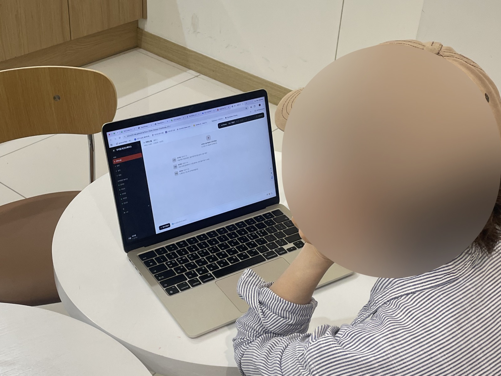
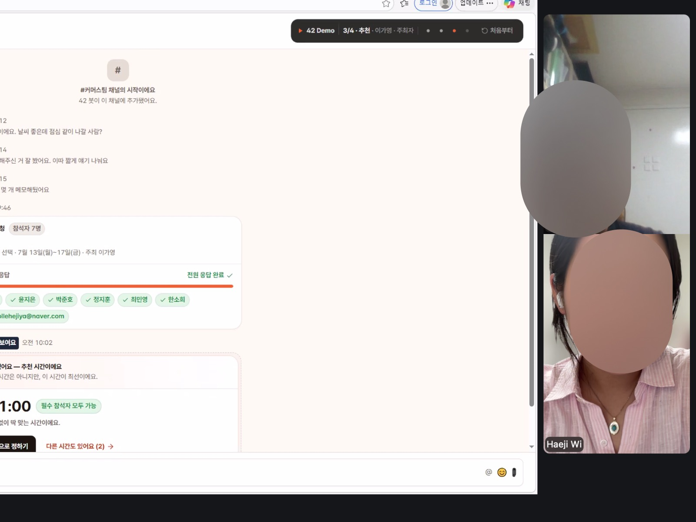
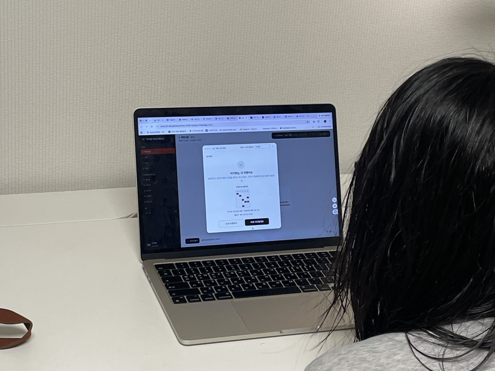

빠른 설계
AI와 아이디어 구체화
Toss 2026 Design challenge
01 · How I Worked
설계부터 프로토타입 구현, 사용성 테스트, 개선까지 빠르게 반복했습니다.
무엇을 만들고 왜 바꿀지 결정
AI와 아이디어 구체화
동작하는 시안 구현
직접 사용하며 검증
AI와 문제 수정
02 · Brief Analysis

challenge recognition
단순히 빈 시간이 겹치는지만 확인해서는 회의 시간을 정할 수 없었습니다.
6명에게는 피하고 싶은 시간과 외근 일정이 있었고, 참석 우선순위도 달랐습니다.
따라서 각자의 조건을 한곳에 모으고, 필수 참석자의 가능 여부와
다른 구성원의 선호를 함께 비교할 방법이 필요했습니다.
03 · Task Analysis
다들 언제 되는지 묻고, 응답을 하나씩 모아야 합니다.
모인 시간을 비교해 가장 괜찮은 시간을 찾아야 합니다.
모두가 가능한 시간이 없다면, 각자의 조건을 비교하고 수용 가능한 대안을 찾아야 합니다.
회의 시간 정하기는 하나의 일이 아니었습니다.
각자의 조건을 모으고, 가능한 시간을 비교하고, 의견을 조율하는
세 가지 일이 모두 주최자 한 사람에게 집중되어 있었습니다.
현재 서비스들은 이 부담을 어떻게 해결하고 있을까요?
04 · Market Research
회의 시간 정하기를 모으기, 비교하기, 조율하기로 나누고 대표적인 일정 조율 방식을 직접 사용해 봤어요.
익숙한 채널에서 바로 시작할 수 있어요. 하지만 답변을 모아 정리하고, 가능한 시간을 비교하는 일은 주최자가 직접 해야 해요.
*kakaotalk, slack, Microsoft Teams
응답은 쉽게 모을 수 있지만, 주최자가 후보 시간을 먼저 정해야 하고 참석자는 주어진 선택지 안에서만 답할 수 있어요.
*Doodle · 카카오톡 투표 · 네이버 밴드 투표
가능한 시간이 겹치는 구간을 쉽게 찾을 수 있어요. 하지만 별도의 링크와 화면을 오가야 하고, 조건이 충돌할 때 무엇을 우선할지는 주최자가 판단해야 해요.
*When2meet · QuickFigure
각 방식은 일부 과정만 도왔고, 모으기부터 조율하기까지 하나의 흐름으로 이어주지는 못했어요.
What We Learned
기존 도구들은 모으기·비교하기·조율하기 중 일부만 지원했습니다.
세 과정을 하나의 흐름으로 연결해 주최자의 부담을 줄여주는 방식은 찾기 어려웠습니다.
그래서 세 과정을 하나의 흐름으로 연결하되,
시스템은 판단에 필요한 정보를 정리하고 주최자는 최종 결정을 내리는 구조로 설계했습니다.
05 · Design Direction
기존 도구는 일부 과정을 도왔지만, 모으고·비교하고·조율하는 일은 여전히 주최자의 몫이었습니다.
필참 여부·선호·일정 제약까지 함께 고려해 시스템이 추천하고, 사람은 최종 결정에만 집중할 수 있도록 설계했습니다.
시스템이 모으고, 비교하고, 추천합니다.
주최자는 시스템의 추천을 바탕으로 상황맥락을 고려해 최종 결정만 합니다.
06 · System Flow
회의 만들기부터 결과 확인까지, 각 주체의 행동이 하나의 흐름 안에서 이어집니다.
역할을 다시 나누는 데서 그치지 않고,
모으기·비교하기·조율하기 각 단계에서 사용자가 직접 해야 하는 일까지 줄였습니다.
07 · Build
Claude Code로 회의 생성부터 확정까지 직접 사용할 수 있는 프로토타입을 구현했습니다
정지된 시안에서는 알기 어려운 화면 간 연결과 상태 변화를 실제 흐름 안에서 빠르게 확인했습니다.
08 · Iteration
서비스를 처음 접한 3명이 동작하는 프로토타입을 사용하는 모습을 관찰했습니다.
발견한 문제는 심각도와 반복 여부, 수정 범위를 기준으로 비교해 핵심 흐름에 영향을 주는 항목부터 개선했습니다.



낯선 세 명에게 직접 사용하게 하고 관찰했습니다.
| 발견한 문제 | 근거 | 결정 |
|---|---|---|
| 가능한 시간이 없을 때 다음 행동이 없음 | 기능 공백 | 개선 |
| '참석 어려워요'가 버튼으로 보이지 않음 | 행동 요소 인식 실패 | 개선 |
| 회의 확정 상태가 명확하지 않음 | 2/3 반복 | 개선 |
| 필수·선택 참석자의 의미가 불분명함 | 구조 검토 필요 | 개선 |
09 · Final Design
①모으기
처음부터 입력하지 않고, 필요한 정보만 보완합니다
시스템이 알고 있는 정보는 먼저 채우고, 주최자와 참석자는 바꿀 내용과 빠진 조건만 입력합니다.
②비교하기
추천 하나로 시작하고, 필요하면 전체 근거를 확인합니다
시스템이 6명의 응답을 비교해 가장 적절한 시간 하나를 먼저 보여줍니다. 주최자는 추천 이유와 다른 후보를 확인한 뒤 최종 시간을 결정합니다.
③확정하기
시간을 정하면, 공지와 참석 확인은 시스템이 이어갑니다
주최자가 시간을 결정하면 시스템이 결과를 자동으로 공유합니다. 주최자와 참석자는 각자의 참석 여부만 확인하면 됩니다.
10 · Reflection
짧은 기간이 남긴, 정직한 배움들입니다.
처음부터 바이브코딩으로 구현해 동작하는 프로토타입으로 빠르게 검증했지만, 디자인 툴이면 몇 번의 조작으로 끝날 미세조정과 세부 QA를 언어로 지시하느라 오히려 시간이 더 드는 순간도 있었습니다.
'1시간짜리 회의를 잡는다'는 좁은 시나리오로 시작했지만, 더 쉬운 경험을 좇을수록 결국 워크 앱·캘린더·메신저가 맞물리는 영역까지 번졌습니다. 무엇을 다루지 않을지 정하는 게 가장 어려웠습니다.
회의실 예약·전체 참석 확인(RSVP)·응답 마감·장소 공지는 사용자 테스트에서 필요를 확인했지만, 본질이 아니라 이번 범위 밖으로 두고 확정을 다음 단계로 넘어가는 지점으로만 다듬었습니다.
고려했지만 만들지 않은 것들 — 캘린더 자동 추천과 장소 예약시간을 잡는 경험은, 뒷단에 사용자 데이터를 많이 가지고 있을수록 더 쉽고 편리해집니다. 좋은 스케줄링 경험은 결국 얼마나 많은 맥락 — 캘린더·일정·관계 — 을 아느냐에 달려 있었습니다.